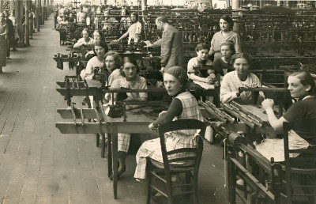

Manufactures Tissel (ancienne usine Ternynck)
Manufactures Tissel (ancienne usine Ternynck)
Résumé
LES MANUFACTURES TISSEL (1835 – aujourd'hui)
Lieu : 17 rue du Nouveau Monde, 59100 Roubaix Activité originelle : Filature et tissage de laine Activité actuelle : Tiers-lieu d'économie circulaire Surface : 11 000 m²
L'histoire de ce lieu commence avec Henri Ternynck, frère de notre ancêtre Aimé Ternynck. En 1835, à l'aube de la mécanisation du textile à Roubaix — le premier métier à tisser à vapeur n'était arrivé que quinze ans plus tôt —, Henri fonde son entreprise de tissage de laine dans ce qui deviendra la plus ancienne usine de Roubaix encore debout. Le bâtiment principal, dont les grandes façades de briques rouges dominent la rue du Nouveau Monde, date de 1840. Ses fils Henry et Edmond poursuivent l'activité, puis leurs descendants continuent d'innover dans ce bâtiment de 11 000 m² construit et agrandi entre 1840 et 1986. Pendant plus de 150 ans, l'entreprise Ternynck frères tisse de la laine à Roubaix, traversant la Belle Époque, les deux guerres mondiales et l'effondrement du textile nordiste. L'épopée des Ternynck prend fin en 2002. L'usine devient alors Tissel, un centre de logistique et de stockage pour des marques de prêt-à-porter.
À partir de 2023, la Ville de Roubaix — désignée ville pilote de l'économie circulaire en Europe en septembre 2022 — acquiert le site et le transforme en tiers-lieu dédié à l'économie circulaire, sous le nom des Manufactures Tissel. Le lieu accueille aujourd'hui une dizaine d'entreprises et d'associations réunies autour du recyclage et de la transformation des modes de production : fabricants de vêtements en lin local, de ceintures à partir de pneus usagés, d'imprimantes 3D, comptoir de matériaux récupérés sur des chantiers, centre de formation BTP. L'association Les Manufactures Tissel, constituée en société coopérative d'intérêt collectif, fédère ces « habitants » du site et co-construit avec la Ville un modèle d'économie circulaire destiné à être reproduit ailleurs.
Le lien avec notre famille est direct. Henri Ternynck est le frère d'Aimé Ternynck (1812-1887), industriel sucrier et négociant en tissus à Roubaix. La fille d'Aimé, Lucie Ternynck, épouse Adolphe Delemer ; leur fille Marguerite Delemer épouse André Saint-Léger, administrateur des Établissements Agache, et devient la mère de Claude Saint-Léger. L'usine fondée par Henri Ternynck en 1835 précède de sept ans la fondation par son frère Aimé de la maison de négoce Ternynck frères en 1842 — les deux branches de la famille Ternynck bâtissent ainsi simultanément leurs empires respectifs, l'un dans le textile roubaisien, l'autre entre le négoce de tissus et la sucrerie picarde.
*Source : tissel.org ; LinkedIn Tissel Roubaix ; Nord Info (info.lenord.fr) ; RoubaixXL ; données familiales Gramps.
{kind=link}

📷 Cliquez pour voir 1 photo(s)